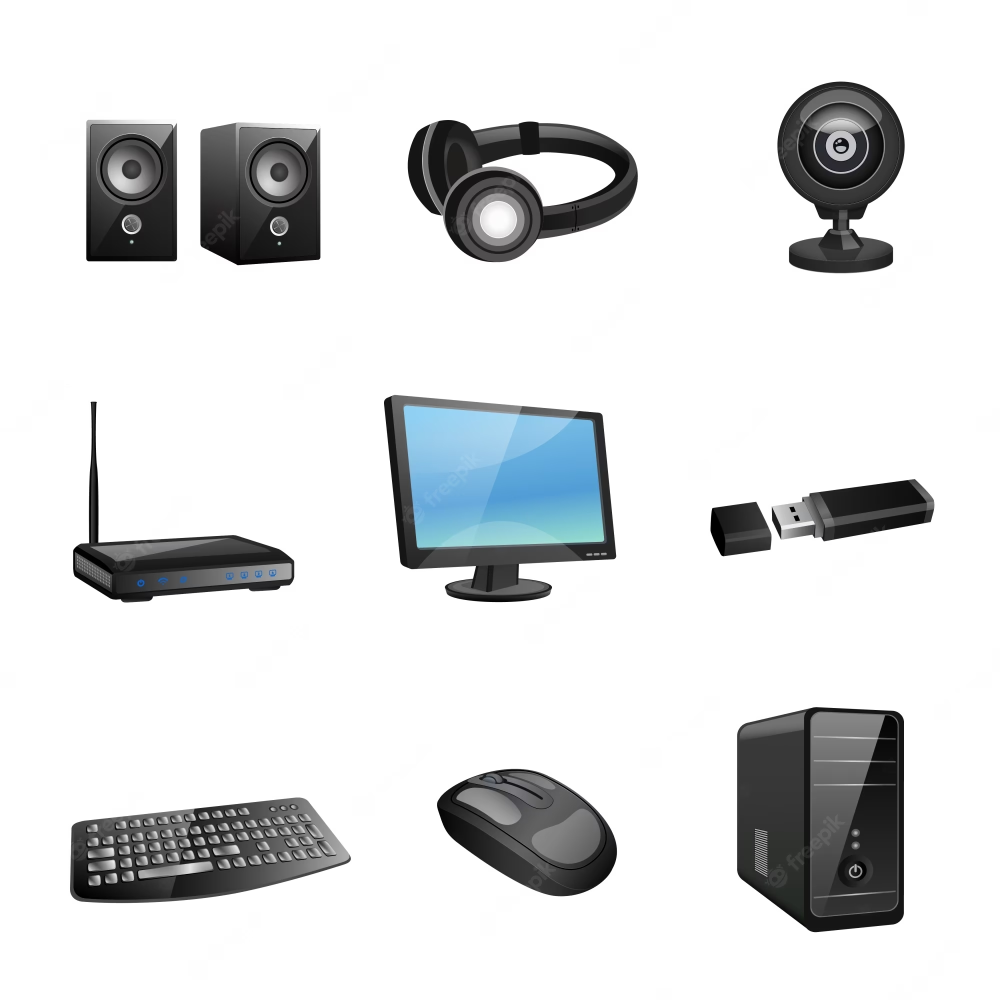

Onderdelen van een computer

De Von Neumannarchitectuur

Voorbeelden van randapparatuur
Processor
Een processor, ook wel een CPU (Central Processing Unit) is eigenlijk een soort het brein van een computer. Het is verantwoordelijk voor een groot gedeelte van berekeningen uitvoeren en het beheren van verschillende instructies. Een CPU bestaat uit 2 belangrijke onderdelen: een Arithmetic Logic Unit (ALU) en een Control Unit (CU).
Arithmetic Logic Unit
De ALU is het onderdeel van de CPU die zich bezighoudt met rekenen en logica. Het kan rekenen en logische bewerkingen uitvoeren op de gegevens die worden verwerkt door de computer. Met logische bewerkingen bedoel ik functies zoals “AND”, “NOT” en bijvoorbeeld “OR”.
Control Unit
De CU is het besturingscentrum van de CPU. Het zorgt voor de uitvoering van instructies en zorgt voor de correcte gegevensstroom. Een CU vertelt het geheugen, de ALU en de randapparatuur wat het moet dan bij verschillende instructies van een programma.
Door een samenwerking tussen de CU en de ALU is een computer in staat complexe berekeningen en allerlei programma’s uit te voeren. De CPU staat hierdoor dus centraal in veel essentiële taken die een computer moet uitvoeren.
Werkgeheugen RAM en ROM
Het werkgeheugen van een computer, ook wel RAM (Random Access Memory), is een belangrijk onderdeel van de computer. Het werkgeheugen is verantwoordelijk voor het tijdelijk opslaan van informatie die gebruikt moet worden door de computer. Werkgeheugen is wel degelijk anders dan opslaggeheugen, als een computer wordt uitgeschakeld raakt al het werkgeheugen namelijk verloren, het opslaggeheugen raakt dan niet kwijt.
Het werkgeheugen slaat informatie op die tijdelijk gebruikt wordt door het systeem. Werkgeheugen is ook veel sneller dan opslaggeheugen, onder andere omdat het geen bewegende delen heeft die nodig zijn om informatie op te halen, hierdoor is het dus goed geschikt voor het snel ophalen van informatie die de CPU bijvoorbeeld nodig heeft. De naam RAM is gekozen omdat dit geheugen willekeurig toegang heeft tot de gegevens en het hoeft dus niet op een vaste volgorde door alle gegevens heen om iets te lezen of schrijven.
ROM staat voor Read Only Memory, dit geheugen kan niet meer zomaar worden veranderd, dit geheugen wordt dus gebruikt voor de firmware. Firmware is software die zorgt voor de aansturing van de hardware, een voorbeeld hiervan is de BIOS (Basic Input/Output System).
Bus
Bus is een systeem van het overbrengen van gegevens binnen een computer. Het is dus een soort verzameling van “wegen” waarmee informatie van de ene plek in een computer kan worden verzonden naar een andere plek. De bus zorgt er dus voor dat verschillende onderdelen van de hardware (bijv. CPU, GPU en RAM) met elkaar kunnen communiceren.
Von Neumannarchitectuur
De Von Neumann architectuur vormt de basis voor de manier waarop moderne computers worden gemaakt. Het belangrijkste kenmerk van de Von Neumann-architectuur is de scheiding van gegevens en programma's in het geheugen, waardoor programma's kunnen worden opgeslagen en bewerkt als gegevens. Het is een computerarchitectuur die bestaat uit een CPU, geheugen, invoer en uitvoerapparaten. De Von Neumann architectuur zorgt door voor een hogere flexibiliteit in een computer en dat is waarom deze architectuur als basis wordt gebruikt voor het ontwikkelen van computers.
Moederbord
Een moederbord in een printplaat waarop allerlei andere stukken hardware geplaatst kunnen worden, het is een erg belangrijk onderdeel. De communicatie van verschillende onderdelen in een computer gaat via een moederbord, waarop al deze belangrijke componenten zijn aangesloten. Op een moederbord sluit je bijvoorbeeld je CPU, GPU en geheugen aan, via het moederbord wordt ook de stroomlevering aan deze onderdelen geregeld. Ook zitten de I/O (Input/Output) poorten hierop bevestigd, denk dan aan USB-ports en HDMI-ports, deze zijn nodig om je randapparatuur aan te sluiten.
System-on-a-chip
De naam system-on-a-chip spreekt eigenlijk voor zich, het houdt in dat het hele computersysteem zich op een enkele chip bevindt. De CPU, werkgeheugen en GPU zitten hier dus allemaal op een chip. Het is dan ook wel te begrijpen dat deze niet veel te vinden zijn in PC’s (Personal Computer). Het idee van system-on-a-chip is compact en energiezuinig, maar levert daardoor niet dezelfde prestaties als een computer met grotere en losse onderdelen voor de verschillende functies. Deze SoC’s worden dus vooral aangetroffen in apparaten zoals pinautomaten, kopieermachines en magnetrons.
Permanent geheugen/opslag
Permanent geheugen is, zoals de naam al doet aanduiden, geheugen dat opgeslagen blijft, ook als de computer uitgezet wordt. Er zijn verschillende vormen van permanent geheugenopslag, een aantal bekende zijn bijvoorbeeld de HDD’s (Hard Disk Drive, ook wel harde schijf) en de SSD’s (Solid-state Drive). Harde schijven zijn opslagapparaten die door middel van draaiende schijven met een magnetische laag informatie op slaan. SSD’s slaan ook gegevens op, maar hebben geen bewegende onderdelen, ze slaan vaak informatie op door middel van flashgeheugen. Flashgeheugen kan elektrisch verwijderd of veranderd worden.
Randapparatuur
Randapparatuur bestaat uit computer hardware die niet wordt gebruikt om bijvoorbeeld intern berekeningen uit te voeren maar om te communiceren als een mens met de computer. Denk bij randapparatuur dus aan bijvoorbeeld een toetsenbord, muis of een monitor. Randapparatuur helpt dus niet met de berekeningen en logische functies in een computer maar is wel nodig om makkelijk te kunnen communiceren met de computer.
Verbinden: Kabels en Interfaces
Om computeronderdelen werkend te krijgen heb je kabels nodig. Je hebt kabels nodig om stroom te leveren aan de verschillende componenten, ook bestaan er kabels die een verbinding aan het internet leveren, zoals ethernetkabels. Er zijn ook datakabels die gegevens kunnen vervoeren van en naar een computercomponent. Een voorbeeld van een datakabel is een SATA-kabel, die wordt gebruikt voor aansluiting van interne harde schijven op het moederbord. Om ervoor te zorgen dat je monitor werkt moet deze niet alleen stroom hebben maar moet deze ook een video signaal ontvangen, dat kan door het gebruik van bijvoorbeeld een HDMI-kabel of een displayport-kabel.